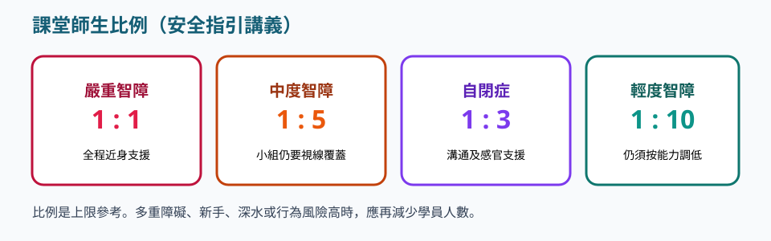
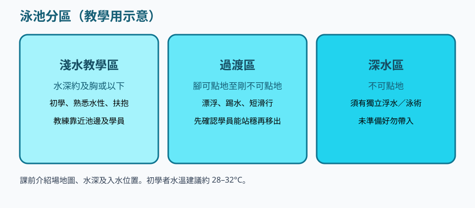
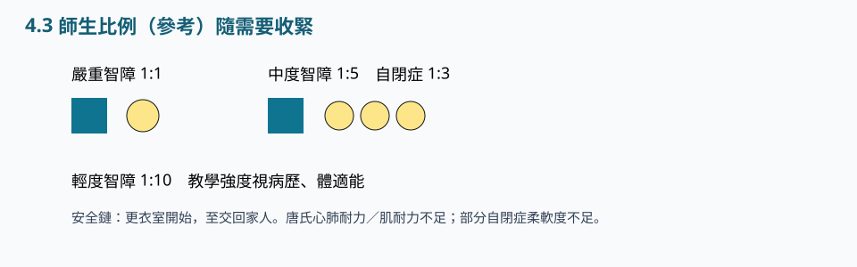

實務 · 4.3
特殊需要人士游泳安全指引
請依序研讀導讀、重點與池邊準則，聽粵語說明，再以練習核對理解。
本網站根據課程講義、課堂分享與溝通工具筆記整理，供未能出席面授的學員系統研讀。不能代替醫療診斷、法律意見、課堂實習或面授扶抱示範。涉及健康、用藥、脊柱或癲癇等情況，須按家長／醫護文件執行。
單元導讀
安全由更衣室開始，交回指定接送人才算完課。文件未齊不下水。須掌握比例、不宜游泳例子，以及初學水溫約 28–32°C。發紺、打顫即上水。
研讀次序：重點 → 粵語說明 → 本單元練習 → 下一單元「特殊需要人士游泳教學法」。
學完應能掌握
- 能說明由更衣室到交回家人的安全鏈，並列出課前文件。
- 能說出不宜游泳的例子，以及初學 28–32°C、高強度 26–28°C 的水溫範圍。
- 編班須應用嚴重 1:1、中度 1:5、自閉症 1:3、輕度 1:10，並備有緊急信號。
重點




安全鏈
講義出處：4.3 特殊需要人士游泳安全指引 · 安全鏈
課堂情境
學員已經換衣服，你才發現無同意書。
教學原則
由更衣室至交回家人；課前互信語言、了解病歷體適能自理、同意書與醫生證明、調查表、健康總表、適應問卷、肌能與技能評估。
池邊執行
文件未齊則不下水；下課點名交到指定接送人才算完課。
不宜游泳例子
講義出處：4.3 特殊需要人士游泳安全指引 · 不宜游泳例子
課堂情境
高燒或耳道插管仍被帶來上課。
教學原則
傳染病高燒、慢性中耳炎或耳道插管、慢性竇炎、對氯或水過敏、濕疹頑癬活躍期、開放傷口、嚴重心臟病；唐氏綜合症留意上呼吸道感染。
池邊執行
核對健康總表，符合例子就改岸上觀察或停課。
比例與心理
講義出處：4.3 特殊需要人士游泳安全指引 · 比例與心理
課堂情境
自閉症小組卻用輕度班比例。
教學原則
嚴重 1:1、中度 1:5（自閉症 1:3）、輕度 1:10；考慮進膳時間、攜帶物品、心理準備。
池邊執行
人手按比例排；剛進膳、未心理準備就延後入水。
緊急計劃
講義出處：4.3 特殊需要人士游泳安全指引 · 緊急計劃
課堂情境
哨聲撤離，聽障學員無反應。
教學原則
信號與撤離；聽障用視覺信號、視障用聽覺信號；人手與特別通道；輔助工具完好。
池邊執行
開課演練燈光或手勢、聽覺提示，並指定特別通道。
設施與水溫
講義出處：4.3 特殊需要人士游泳安全指引 · 設施與水溫
課堂情境
初學班在過凍池長課，或跳水池無看守。
教學原則
核對水深圖、防滑、水梯、跳水池風險；高強度訓練約 26–28°C；初學約 28–32°C；過凍不利腦癱放鬆；過高約 32.2°C 氯蒸發、窗戶模糊；教學中留意發紺、打顫、雞皮。
池邊執行
強度跟病歷走；見到發紺打顫即上水；初學不宜以過凍水進行長課。
課後
講義出處：4.3 特殊需要人士游泳安全指引 · 課後
課堂情境
下課後學員自己走出大門。
教學原則
家人接送、交通、身體狀況、與家長聯繫。
池邊執行
點名交接，交代當日身體狀況，無人接送則按機構程序等待，不予放行。
安全鏈與文件
講義出處：4.3 特殊需要人士游泳安全指引 · 安全鏈與文件
課堂情境
有人想「先下水再補紙」。
教學原則
由更衣室至交回家人才算完課。課前要病歷、同意書、醫生證明、健康總表。
池邊執行
高燒、中耳炎插管、氯過敏、開放傷口、嚴重心臟病不宜游。
水溫與觀察
講義出處：4.3 特殊需要人士游泳安全指引 · 水溫與觀察
課堂情境
初學班用過凍水想「練意志」。
教學原則
高強度約 26–28°C；初學約 28–32°C。凍水不利腦癱放鬆。
池邊執行
發紺、打顫、雞皮即上水；跳水池當高風險。
池邊準則：做到／避免
做到
- 每次核對場地圖、水深、文件與接送人。
- 教學強度跟病歷走，初學水溫約 28–32°C，高強度約 26–28°C。
- 教求助方法，並為聽障／視障準備對應緊急信號。
避免
- 無文件下水。
- 初學用過凍水長課，或忽略發紺打顫。
- 下課後學員無人交接就放行。
讀完先核對
三題判斷：下列做法是否符合本單元池邊準則。
詞彙
- 參加者健康總表
- 彙整病歷、藥物、過敏與緊急聯絡的課前文件。
- 視覺緊急信號
- 給聽力障礙學員的燈光或手勢撤離提示。
- 發紺 cyanosis
- 嘴唇發藍，提示缺氧或過冷。
- 安全鏈
- 交接完成才算下課。
粵語講稿（可邊聽邊看）
以下與本頁錄音同一份講稿。建議先讀重點，再聽說明，把判斷次序聽清楚。